The scores in the comparison table are not a review average. Each is a reading of one part of the device's architecture, taken from public datasheets, published firmware, certification reports and security-lab disclosures. Where a vendor claim cannot be verified, it is scored as if the property were absent.
Vulnerabilities are found every few months and vendors ship updates to close them. That cycle is normal and it is not what this site tracks. What it tracks is the smaller set of flaws that no firmware update can repair, because they are decisions made in silicon and board layout.
WHY A HARDWARE WALLET IS NEVER ALONE
The companion device is part of the threat model.
A hardware wallet is not a general-purpose computer, which is exactly what makes it resistant to malware — and also what stops it reaching the network by itself. It cannot fetch a balance, read transaction history, or broadcast a signed transaction. Every one of those operations is delegated to a companion: a phone or a laptop running a wallet app.

This is the whole reason the following five properties matter. If the companion app is compromised, it can lie about the recipient address, lie about the amount, and suppress what you are shown. The device's only defence is what it can prove on its own hardware, without trusting anything the phone says. Many products sold as hardware wallets fail here: they lean on the security of the middle device rather than replacing the need to trust it.
THE TARGET ARCHITECTURE
One chip should own the secret, the screen and the buttons.
The ideal model is a secure element that drives all input and output itself, with no non-secure intermediate chip anywhere in the signing path and no reliance on the phone or computer. Everything below is a measurement of how far a given device sits from this diagram.

01 — TRUSTED SCREEN
What you see must be what you sign.
To display transaction details — the recipient address, the amount — the device needs a screen of its own. A wallet without one falls back on the screen of whatever it is plugged into, and that is a machine you have already agreed to distrust. Malicious code on the phone can substitute the recipient address, and a device with no display has no way to confirm the real one with you.
Resolution matters less than legibility. A screen that truncates a destination address to a handful of characters invites address-substitution malware to brute-force a convincing lookalike. A screen that cannot render a full contract call is, for smart-contract use, only a step away from blind signing.
Devices are marked down here when the display is absent entirely. Arculus generates seeds securely and supports multi-factor authentication, but has no trusted screen, so its users inherit every vulnerability in the mobile app. Bitkey pairs a software wallet for routine transactions with a hardware wallet for large ones — a sound split — but the hardware half has no display on which to confirm what is being approved.
02 — TRUSTED INPUT
Consent has to be physical.
A confirmation is only meaningful if software cannot produce it. The device needs its own way to record the inputs that matter: a button press to approve a transaction, a PIN entered on the device itself. Where a wallet asks the phone or computer for the PIN, the password or the confirmation, an attack on that app is an attack on the wallet. Arculus has this problem as well as the screen one.
Interfaces that make the safe path tedious are also penalised. A device that buries address verification three menus deep, or offers a “trust this session” mode that batches away per-transaction approval, has built a control that humans will route around.
03 — SECURE ELEMENT
The secret should live somewhere that cannot be read.
Keys and seeds belong in a secure element: a chip built to generate elliptic-curve keys and sign transactions, with hardened memory, active shielding, glitch and fault detection, and no path that hands key material back out. Secure elements are normally submitted for third-party evaluation and certified under Common Criteria or NIST FIPS 140.
A wallet without one is performing cryptography on a general-purpose chip and inherits that chip's attack surface. Trezor Model One and Model T both sit here. Trezor's stated reason was open source: using a certified element would have meant an NDA with the vendor and closed firmware. That is a real tension, but declining the element was a serious concession — Kraken Security Labs and Ledger's Donjon team have both published flaws, and seeds have been recovered from these devices through power glitching and by dumping memory to brute-force the passphrase offline. The same class of attack was demonstrated against KeepKey, which also has no secure element. OneKey Touch is a related case: a colorful touchscreen on what is functionally a cold wallet, with no secure element behind it.
Having one is not the same as using it.
A system is as strong as its weakest component, so the secure element has to cover the entire life cycle of the secret — generated inside it, used inside it, never written out in the clear. CoolWallet S held a secure element with a top-tier certification and still stored its password and seed in plaintext in the mobile app, which Kraken Security Labs found and reported. That specific issue was fixed, but the PIN is still entered on the phone.
A larger group of devices uses the element only as a lockbox. Trezor Safe 3 and Safe 5 keep a key in the secure element that decrypts the seed; the PIN unlocks the element, and the plaintext seed is then loaded into a general-purpose STM32 microcontroller, where all signing happens. Encryption at rest is real protection, but malware on that MCU — planted, for instance, through a supply-chain attack — can read the seed straight out of memory. ColdCard Mk4 and ColdCard Q carry two secure elements and a protocol to protect the seed between them, and still load it into an STM32 to sign. ColdCard's answer is a read-only bootloader that hashes the firmware and has a secure element verify it, turning an indicator light green on success — which makes the security of the device rest on the general-purpose chip being genuinely read-only, rather than on the secure elements. Keystone 3 Pro and Passport follow the same pattern: generate and store in the element, sign on a chip that is not one.
04 — TRUSTED I/O WIRED TO THE ELEMENT
A display the secure element does not drive is a display someone else can drive.
Screen, buttons and host connection should all terminate at the secure element. This is a genuinely hard engineering problem: secure elements are resource-constrained and often lack the pins to drive connectors, which is why the common workaround is a microcontroller acting as a hub — driving the display and reading the buttons, then talking to the element.
That hub is a new place to hide. A manipulated MCU can show you one address on the display while handing a different transaction to the secure element to sign, which is precisely the shape of a supply-chain attack, and why every vendor in this category tells you to buy direct. Ledger Nano S is the worked example: a ST31 secure element paired with an STM32 MCU, and Thomas Roth demonstrated at CCC that the MCU could be overwritten — he loaded a game onto it.
05 — NO GENERAL-PURPOSE MCU
The strongest design removes the hub rather than hardening it.
Ledger Nano S Plus and Nano X move to the ST33, a secure element with enough I/O to take on more of the job, and pull the display driver and button handling into the element itself — which makes manipulating what is shown, or faking a press, substantially harder. An MCU remains, handling USB and Bluetooth. That remnant has already been costly once: Kraken Security Labs found the MCU code could be overwritten before the device reached the buyer, after which connecting it to a computer for the first time would run malicious code that could blank the display and steer the user into pressing buttons while their assets were taken. Ledger patched the firmware and says JTAG is disabled on newer devices, though its own documentation has said otherwise. No new exploit of that path has been published, but the MCU is still the softest part of the device.
Ledger Stax is hard to place — public technical detail is thin, and on what is available it appears to share the Nano X architecture, MCU included.
What removing it would take.
This is not hypothetical work. ICCD is a USB stack written for secure elements and already shipping on smart cards, which run the USB code on the element with no intermediary. NFC is supported by many secure elements — including Ledger's ST33 — needs no battery in the device, is more secure than Bluetooth, and is already the transport for card payments on both iPhone and Android. The pieces to build a wallet with no general-purpose chip in the signing path exist.
A NOTE ON OPEN SOURCE
Openness is not a security property. It is what lets you check the other five.
Open firmware is not automatically reviewed firmware, and a closed secure-element applet can be excellent. What openness buys is verification: if the signing firmware is published and the build is reproducible, the binary on your device can be shown to match the code people have actually read.
The trade-off is real in both directions. Trezor chose open source over a secure element and paid for it in extractable seeds. Ledger runs certified silicon but keeps the secure-element firmware closed under an NDA with its supplier — and while BOLOS is a genuine contribution, the critical component sits behind that wall. Reverse engineering is slow and unrewarding, so researchers mostly do not do it; a sufficiently motivated attacker will. A reasonable middle path is to separate the low-level modules that talk directly to the element from the high-level ones and open the latter, shrinking the closed surface to the part that genuinely cannot be published.
SCORING
The composite is an unweighted mean of the five, rounded to one decimal. We publish it because people want one number, and we refuse to weight it because the right weighting is your threat model, not ours.